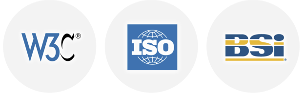

Accessible Procurement
Procuring the right products and services for Sky's website can make a big difference when it comes to meeting accessibility goals. This page explains how to approach the task of procuring the right solutions and provides some pertinent questions to ask prospective suppliers.
Procuring the right products and services for Sky's website is not an easy task, especially if you are not familiar with accessibility best practice. As the content and functionality of the website changes over time so too will the accessibility requirements. It is essential that products and services you use are able to adapt to changes in technology and thinking. Making sure you ask the right questions and obtain as much knowledge about the products and services on offer will ultimately give Sky's website the best chance of achieving its goals.
If you do not already have a preferred supplier a particular project there are several things to consider as you procure different products and services.
External suppliers
When you procure the services of an external supplier, you'll want to have confidence in their accessibility credentials. If you're unfamiliar with accessibility yourself, this may feel like a challenge.
NB: Nomensa (author of this toolkit) is an external agency that has an established relationship with Sky through the Bigger Picture team. We are happy to help with the procurement process, but please check with the Bigger Picture team first to see if it is appropriate.
1. Draw up a shortlist
Draw up a short list of potential suppliers. Between two and five is usually a good number, but please check what Sky's usual procurement process is.
Ask colleagues or contacts within the industry if they can recommend a supplier they've worked with before. First hand experience is usually a good indication of quality.
Searching is another approach. Look for suppliers that work with organisations you trust. Contributions to the industry through accessibility focused articles or blog posts are a good sign. Another positive indication of expertise is an agency's involvement in developing accessibility guidelines and standards through recognised industry bodies.
2. Request information
Ask each supplier to provide the following information:
- Contact details for two clients they've worked with in the last 12 months where accessibility was a key requirement of the project;
- Three examples of their work from the last 12 months that demonstrate their accessibility expertise.
Talking to previous clients is often a useful way to gauge a supplier's calibre. When you ask for examples of the supplier's work, you might also like to ask them for an overview of the accessibility each example demonstrates.
Asking for recent examples is important. Accessibility adapts to reflect changes in technology, so projects completed in the last 12 months are likely to demonstrate current thinking.
3. Assess their knowledge
You may also like to ask each supplier a series of questions designed to illustrate their accessibility knowledge. Below you'll find a range of questions (and answers) that you can use for this purpose.
4. Write the project brief
Developing a brief (or requirements document) is standard practice for most projects. It's particularly important that you communicate Sky's accessibility goals (Sky's accessibility policy) as part of the brief. This makes it clear to each supplier that accessibility will be a key success metric for the project. It also means that the accessibility goals will become part of the contract, which offers you a measure of protection should the chosen supplier fail to meet expectations.
5. Request a proposal
At this point you may have reduced the shortlist down to two or three names. Ask each supplier to submit a detailed proposal based on the project brief.
A good proposal will have accessibility woven throughout the programme of services, rather than as a footnote at the end. Look carefully for case studies, testimonials, and background information that offer independent support of the supplier's expertise.
Technology suppliers
When you procure a technology, for example a Content Management System (CMS), it's often a significant investment. The solution you choose is likely to be in place for several years, so it's important that it can support Sky's accessibility goals.
1. Draw up a shortlist
Draw up a shortlist of two to five possible products. This list may be based on requirements from elsewhere in Sky, or you may be able to draw it up from scratch.
Ask industry contacts or colleagues if they've had any experience working with these solutions. Searching can also produce useful information on the accessibility capability of different products, often from independent sources.

2. Request information
Ask each technology supplier to provide the following information:
- Contact details for two customers who have purchased their product in the last 12 months, where accessibility was a key requirement;
- Examples of three websites or implementations of their technology from the last 12 months that demonstrate the accessibility capability of their solution.
Asking for recent examples will give you a more accurate reflection of the product's ability to meet current accessibility standards. Talking to existing customers will also give you an insight into how the product in question was able to meet their accessibility goals.
3. Assess its capability
You might want to ask each technology supplier a series of questions designed to demonstrate their product's accessibility credentials. In Appendix A you'll find a range of questions (and answers) you can use for this purpose.
It's also worth asking each supplier if they can provide any independent research that verifies the accessibility capability of their product. If they can't provide one, you might choose to ask them to commission one specifically. This wouldn't be appropriate for smaller products, but if you're looking to invest a substantial sum in a new product, it's a far more reasonable request. Don't forget the technology supplier would then be able to use that report to promote the accessibility credentials of their product to other potential customers!
Final thoughts
Once you've successfully procured a product or service you're satisfied with, it's helpful to maintain a preferred suppliers list. While your list should ultimately include suppliers with good credentials, it may be necessary to keep notes on suppliers which didn't meet the requirements and the reasons why. You may find you'll need to undertake procurement processes for future products and services. Having detailed information on potential suppliers will make that process more manageable.
Questions for agencies
Questions for all agencies
Q. How familiar with the Web Content Accessibility Guidelines are you?
A. They should be very familiar, and be able to explain that the Web Content Accessibility Guidelines (WCAG) are the globally recognised benchmark for building accessible websites and measuring web accessibility. They're released by the Web Accessibility Initiative (WAI) of the World Wide Web Consortium (W3C), and cover technologies including HTML, CSS, JavaScript and Flash.
Q. Which version of WCAG would you recommend we use?
A. WCAG 2.0 is the current version. Released in 2008, they offer the most up to date set of guidelines that support modern web development techniques more fully. WCAG 1.0 were released in 1999, and are now considered out of date and impractical.
Q. What level of accessibility under WCAG would you recommend we aim for?
A. WCAG 2.0 offers three levels of accessibility: Level A (basic), Level AA (intermediate), and Level AAA (highest). Level AA is a sensible goal to aim for. Level A won't put in place the support needed by many people with disabilities, and Level AAA (although a noble place to aim) is a much more substantial challenge to meet.
Questions for creative agencies
Q. What do you consider to be important for accessibility during the design stage of a project?
A. At least three of the following topics should be mentioned:
- Well defined page layout;
- Consistent use of link styles and navigation;
- Clearly defined link phrases;
- Good colour contrast (including alternate colour schemes);
- Avoidance of text in images (except for logos);
- Coping with text size increase up to 200%;
- Careful use of fonts.
Q. How would you ensure that colour combinations achieve good colour contrast?
A. Using a colour contrast analyser to compare foreground and background colour combinations, to ensure they meet the minimum threshold required by WCAG 2.0 (Level AA: 4.5:1, Level AAA: 7:1).
Questions for development agencies
Q. What do you consider to be important for accessibility during the development stages of a project?
A. At least three of the following topics should be mentioned:
- Semantic HTML (use of headings, lists, paragraphs etc.);
- Text descriptions for images;
- Valid (and standards compliant) HTML/CSS code;
- Unobtrusive (and fully accessible) JavaScript;
- Keyboard accessibility (no dependency on a mouse to use the website);
- Logical source order of the page.
Q. What tools do you use to create templates?
A. A good supplier will include hand coding as part of their toolkit. Some editing tools may also be used, but they shouldn't be relied on for good accessibility.
Questions for CMS vendors
Q. How does your CMS support accessibility?
A. At least three of the following topics should be mentioned:
- There is a fully customisable template layer;
- The content editor encourages accessibility best practice;
- It's possible to provide text descriptions for images;
- The code it produces is valid and semantically well structured;
- The user interface is accessible to people with disabilities.
Q. What aspects of accessibility overlap with Search Engine Optimisation (SEO) and how does your CMS support that?
A. The production of good semantic code such as titles, headings, lists, good use of link phrases, and the provision of text descriptions for images all have a positive influence on SEO. Our CMS encourages the use of all these elements.
Q. Does your CMS have a fully customisable template layer?
A. Yes. There is full separation of the business logic from the presentation layer. 100% of the code output by the CMS can be modified to handle integration of fully accessible templates.
Questions for technology suppliers
Q. Has the interface for your product/tool been tested for accessibility?
A. Yes, it has been tested using the WCAG guidelines by a 3rd party. (If the product or service allows users to create web content) The back-end has also been tested using the Authoring Tool Accessibility Guidelines (ATAG).
Q. (If applicable) When the product/service is customised, how easy is it to ensure the output is accessible?
A. It is quite easy. There is full separation of the business logic from the presentation layer. 100% of the code output by the product/service can be modified and made accessible.